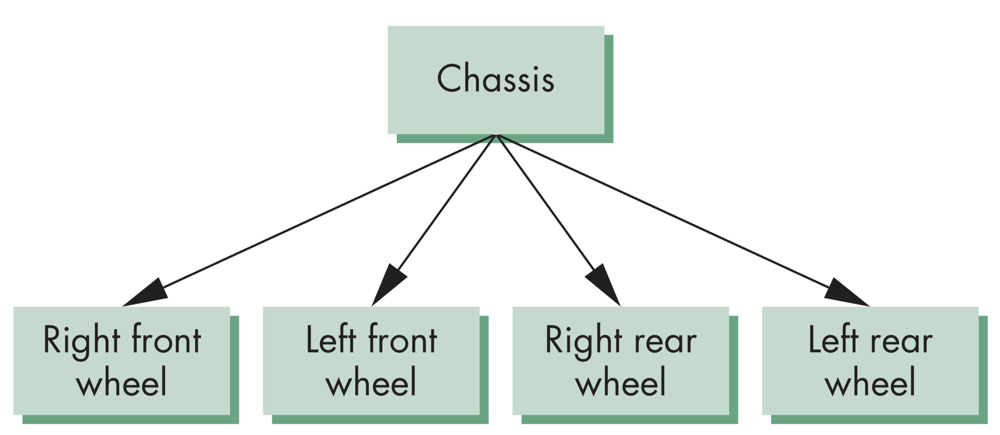
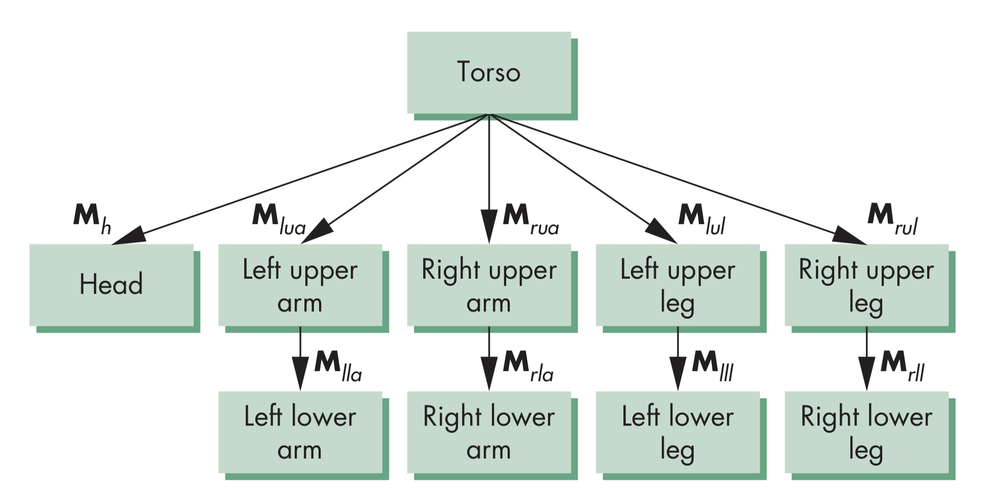

计算机图形学
第九章 建模和层次结构
层次化建模
层次化建模
实例变换
从一个原型对象开始，每次变换后呈现的姿态都是一个实例，包含缩放、方向、位置，定义了一个实例变换
层次化建模
符号实例表
为每个模型建立符号实例表，为每一次变换赋序号，并储存其相应的缩放、方向和位置信息，形式如下:

层次化建模
汽车模型示例

如图中所示的汽车模型，由车厢加四个相同的车轮组成，因此有两个符号，汽车的前进取决于汽车车轮转动的速度，但是符号实例表无法显示车辆模型各部分之间的关系
层次化建模
汽车模型函数构建
利用函数建立汽车模型，代码如下所示，代码的问题同样是无法清晰地显示各部分间的相对关系
car(speed)
{
chassis();
wheel(right_front);
wheel(left_front);
wheel(right_rear);
wheel(left_rear);
}
层次化建模
图和树
图由一组结点和边构成，每一条边都连接两个结点，可以是有向边或无向边。如果有向边构成回路，则称图为环图
如果图中每个结点都恰好只有一个父结点，可以有多于一个子结点，则称为树，树的叶结点无子结点
层次化建模
车的树状模型
层次化建模
车的有向无环图

将汽车的四个车轮视作一样的时，可用有向无环图(DirectedAcycli Graph， DAG)表示，实质上与树状模型表示是相同的
层次化建模
建立树状模型
建立树状模型时，必须考虑结点和边分别放置何种类型的信息，结点，需要考虑绘制的内容，以及连接 子结点。边，需要考虑包含结点间逐渐增加的变换信息
层次化建模
机器人手臂建模示例

层次化建模
机器人手臂运动结构

机器人手臂是一个典型的关节模型，各部分间通过关=节连接，可以通过设定各关节的角度描述当前模型的状态
层次化建模
机器人手臂各部分关系
- 基座能够独立转动，一个角度决定位置
- 下臂连接到基座上，其位置取决于基座的转动角度，并有相对于基座的平移变换，及相对于连接关节的转动角度
- 上臂连接到下臂上，其位置取决于基座和上臂 ，有相对于上臂的平移及相对于连接上臂关节的相对转动
层次化建模
所需矩阵
描述树状模型所需的矩阵有:
- 基座的旋转:$R_b$
- 下臂相对于基座的平移: $T_{lu}$
- 下臂相对于基座关节的转动$R_{lu}$
- 上臂相对于下臂的平移: $T_{uu}$
- 上臂相对于关节的转动: $R_{uu}$
- 将上述矩阵结合起来有，上臂的变换矩阵为$M=R_{b}T_{lu}R_{lu}T_{uu}R_{uu}$
层次化建模
WebGL代码
var render = function() { gl.clear( gl.COLOR_BUFFER_BIT | gl.DEPTH_BUFFER_BIT ); uModelViewMatrix = rotate(theta[Base], 0, 1, 0 ); base(); uModelViewMatrix = mult(uModelViewMatrix, translate(0.0, BASE_HEIGHT, 0.0)); uModelViewMatrix = mult(uModelViewMatrix, rotate(theta[LowerArm], 0, 0, 1 )); lowerArm(); uModelViewMatrix = mult(uModelViewMatrix, translate(0.0, LOWER_ARM_HEIGHT, 0.0)); uModelViewMatrix = uModelViewMatrix(modelViewMatrix, rotate(theta[UpperArm], 0, 0, 1) ); upperArm(); requestAnimFrame(render); }
层次化建模
机器人树状结构
前述代码显示了机器中人手臂各部分之间的关系，也能在不改变各部分间关系的前提下改变各部分的外观。若将机器人手臂以树形结构表示，结果如左侧图中所示，其中每一个结点的所具有的通用结构，如右侧图中所示

层次化建模
一般化问题
以通用结点表示树状结构，需要考虑但不限于以下问题：
- 如何处理多个子结点问题？如何表示更一般的树形结构？如何遍历？
- 如果是动画场景，动态信息该如何表示？可否在执行过程中实现结点增删操作？
层次化建模
人模型
层次化建模
构建人模型
构建人的模型，可利用二次曲面，如椭圆和圆柱体要模型，各部分通过函数实现访问，如torso()访问身体躯干部分，leftUpperArm()访问上前臂。结点相对于其父结点的位置用矩阵表示，比如$M_{lla}$表示左手臂相对于左上臂的位置
层次化建模
树状模型显示和遍历
人模型的各部分位置由11个关节的角度决定。其中，两个用于确定头部的位置，其余每个关节对应一个部分
正确显示树状模型要需要对树进行遍历，用图的遍历算法支持，要求每个结点至少访问一次。每个结点均有显示函数描述与该结点的信息，也包括位置和方向的变换矩阵
层次化模型
变换矩阵
树模型共有10个相关矩阵，分别描述如下：
- $M$描述了整个躯干的位置和方向，为树的根结点
- $M_h$表示头部相对于躯体的位置
- $M_{lua}$, $M_{rua}$, $M_{lul}$, $M_{rul}$分别表示了四肢相对于躯体的位置
- $M_{lla}$, $M_{rla}$, $M_{lla}$, $M_{rll}$分别表示了四肢下半部分相对于上半部分的位置
层次化建模
基于堆栈的遍历
- 设置模型视图矩阵为$M$，绘制躯体
- 设置模型视图矩阵为$MM_h$，绘制头部
- 设置模型视图矩阵为$M_{lua}$，用于绘制左前臂，四肢其余部分以同样方法绘制
- 每次计算时不需要都从根结点开始或计算逆矩阵，可以将$M$及其它在遍历时需用到的矩阵存储在矩阵栈中方便计算
层次化建模
遍历代码
figure(){
PushMatrix(); // Save present model-view matrix.
torso(); // draw torso
Rotate(...); // Update model-view matriix for head
PopMatrix(); // recover original model-view matrix
PushMatrix(); // save it again
Translate(...); // Update model-view matrix for left upper arm
left_upper_arm(); // draw left upper arm
PopMatrix(); // recover and save original model-view matrix again
PushMatrix();
... // continue other parts of the body
}
层次化建模
遍历分析
前述代码描述的是对一棵特定树的一种特定遍历策略，由此需要考虑的是，能否找到一种更为通用的遍历策略。
在给出的代码中，没有包含各部分的状态改变，如颜色的变化，因此需要将这些其它属性也一起保存到堆栈中以避免对状态意外的改变
层次化建模
通用树模型
需要有合适的数据结构表示树模型，并采用合适的算法遍历树。在实际应用中，可使用左孩子右兄弟结构，以链表表示树结构，数据结构中每个结点都有两个指针，左指针指向下一结点，右指针指向连接的子结点列表

层次化建模
树结点结构
树的每个结点需要保存的信息包括：
- 指向兄弟的指针
- 指向子结点的指针
- 指向绘制结点所表示的对象函数的指针
- 用于右乘当前模型视图矩阵的齐次坐标矩阵表示，该矩阵表示了从父结点与该线占之间的变化信息，在WebGL中，矩阵按列存储为一维数组
function createNode(transform, render, sibling, child){
var node = {
transform: transform,
render: render,
sibling: sibling,
child: child,
}
return node;
}
层次化建模
结点初始化代码
function initNodes(Id) {
var m = mat4();
switch(Id) {
case torsoId:
m = rotate(theta[torsoId], 0, 1, 0 );
figure[torsoId] = createNode( m, torso, null, headId );
break;
case head1Id:
case head2Id:
m = translate(0.0, torsoHeight+0.5*headHeight, 0.0);
m = mult(m, rotate(theta[head1Id], 1, 0, 0));
m = mult(m, rotate(theta[head2Id], 0, 1, 0));
m = mult(m, translate(0.0, -0.5*headHeight, 0.0));
figure[headId] = createNode( m, head, leftUpperArmId, null);
break;
......
}
}
层次化建模
一些说明
躯体的各部分位置取决于保存在theta[11]数组中的11个关节角度数值，通过改变这些关节的数值并利用重绘就能实现动画效果
利用rotate和translate函数就能构建所需的变换矩阵。由于矩阵计算需要通过模型视图矩阵，在初始计算时应当首先将模型视图矩阵压入矩阵栈保存
层次化建模
前序遍历代码
function traverse(Id) {
if(Id == null) return;
stack.push(uModelViewMatrix);
uModelViewMatrix = mult(uModelViewMatrix, figure[Id].transform);
figure[Id].render();
if(figure[Id].child != null)
traverse(figure[Id].child);
uModelViewMatrix = stack.pop();
if(figure[Id].sibling != null)
traverse(figure[Id].sibling);
}
var render = function() {
gl.clear( gl.COLOR_BUFFER_BIT );
traverse(torsoId);
requestAnimFrame(render);
}
层次化建模
遍历说明
在乘以当前结点矩阵前需要首先保存模型视图矩阵，更新后的矩阵只应用于子结点，对基兄弟结点无效
该遍历程序只适用于左子右兄的树状结构，这种特定的树结构会体现在每个结点的定义编码中，如果函数定义中发生了状态的改变，树的遍历顺序也可能因此改变
层次化建模
动态树
因为WebGL使用JavaScript实现，结点和结点的结构可以在运行时改变。因此，结点的定义和遍历顺序基本上应当保持一致，但可以在运行时动态地增加或删除结点。对应的在桌面版OpenGL中，利用指针也可以实现动态的树结构